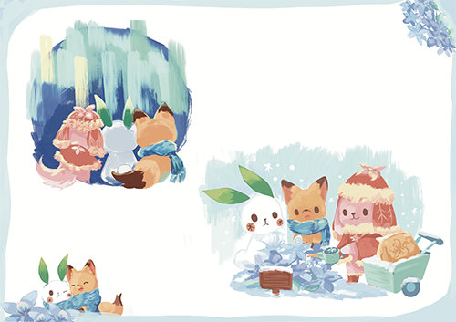

Story
故事簡介
在架空的烏托邦世界「原野」裡，透過主人公波米的視角，逐步挖掘隱藏在看似能永續繁榮的美好烏托邦世界背後的真相。
如果所謂的永續繁榮是透過清除過去的軌跡，將一切歸零再重新開始，永遠在閉鎖的時間裡反覆來回，以達到近似永生的狀態，這樣是否還能稱作是永存與繁榮？這樣的生命是否還具有意義？
場景回顧
Scene 1

調和精靈康狄亞帶著幼子波米從精靈谷出發，一起前往原野準備例行探查。 不料，母子倆卻在途中遭受暗影的襲擊。康狄亞為了保護波米在逃亡過程中不幸失去了性命，失去母親的波米則獨自在凜冬之森死命地奔逃。
Scene 2
摩洛在冬之森發現了虛弱地倒在雪地裡的波米，並將他帶回自己的家。知道年幼的波米無依無靠後便收留了他，兩個人一起在原野生活。
Scene 3

摩洛在冬之森發現了虛弱地倒在雪地裡的波米，並將他帶回自己的家。知道年幼的波米無依無靠後便收留了他，兩個人一起在原野生活。
Scene 4
摩洛在冬之森發現了虛弱地倒在雪地裡的波米，並將他帶回自己的家。知道年幼的波米無依無靠後便收留了他，兩個人一起在原野生活。
Scene 5
原野の生態を偵察するため、ポミの母コンディアが、また年若いポミを原野へ連れて行った。
Scene 6
摩洛在冬之森發現了虛弱地倒在雪地裡的波米，並將他帶回自己的家。知道年幼的波米無依無靠後便收留了他，兩個人一起在原野生活。
Scene 7
摩洛在冬之森發現了虛弱地倒在雪地裡的波米，並將他帶回自己的家。知道年幼的波米無依無靠後便收留了他，兩個人一起在原野生活。
Scene 8

摩洛在冬之森發現了虛弱地倒在雪地裡的波米，並將他帶回自己的家。知道年幼的波米無依無靠後便收留了他，兩個人一起在原野生活。